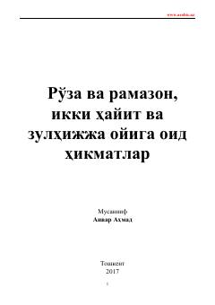

RVRamazon, ro'za va ikki hayit bayramlarining hikmatlari haqida ma'rifiy kitob.
Ushbu kitobda ro'za, ramazon oyi, ikki hayit va zulhijja oyining fazilatlari hamda ularga oid hikmatlar bayon qilingan. Muallif inson ruhiyati va uning nafs ustidan g'alaba qozonishidagi ibodatlarning o'rnini ochib beradi. Asar diniy-ma'rifiy mazmunda bo'lib, keng kitobxonlar omasiga mo'ljallangan.